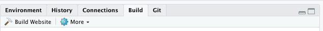

siteymlgen makes it easy to organise R Markdown website output. The init() function placed within the first code chunk of the index.Rmd file of an R project directory will initiate the generation of an automatically written _site.yml file. siteymlgen recomends a specific naming convention for your markdown files. This naming will ensure that your navbar layout is ordered according to a heirarchy.
Installation
You can install siteymlgen …:
Or you can install the development version of siteymlgen from GitHub with:
devtools::install_github("Acribbs/siteymlgen")
Naming convention
In order to control how your website navbar is ordered then you need to stick to the following naming convention:
[A-Z][1-9]_TitleofTab.Rmd
e.g. A1_FileOne.Rmd
The capital first letter of the file name controls the position of the tab in the navbar. The number controls the position within the dropdown menu, if you do not want a dropdown menu then label the file
A − Z
1_TitleofTab.Rmd.
Example
R Markdown to generate a complete website and _site.yml controls the layout of this:
Put your .Rmd files in a single directory. index.Rmd will become the home page.
Add an empty YAML file named _site.yml, which will be populated by siteymlgen according to your file names and input options supplied to init().
Next configure your build tools in Rstudio so that you can build websites:

Then build your website:
